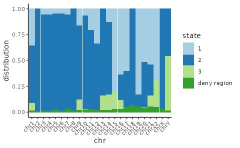
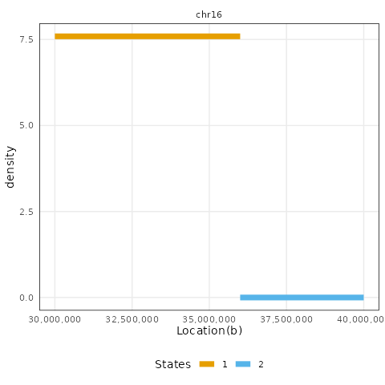
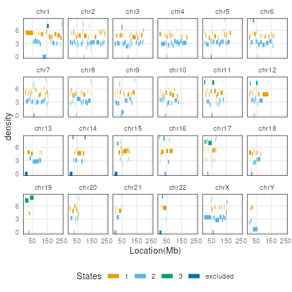
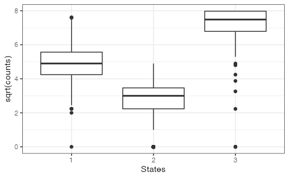
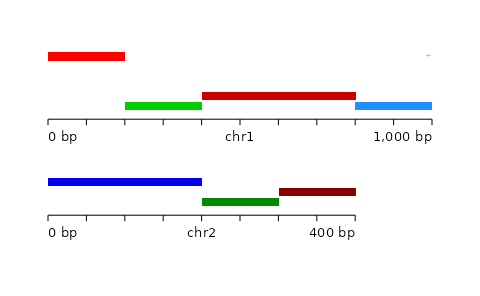
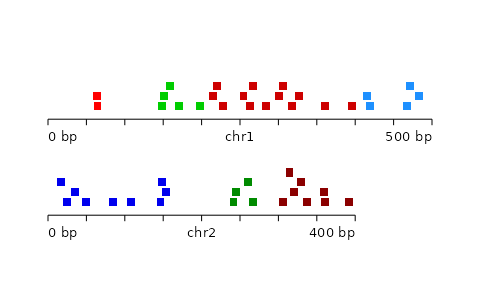
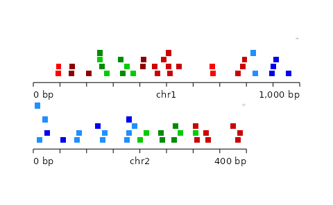
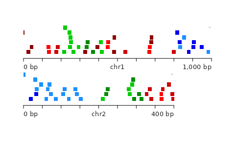

Segmented block bootstrap
Wancen Mu
10/05/2021
Source:vignettes/segmented_boot_ranges.Rmd
segmented_boot_ranges.RmdIntroduction to segmented block bootstrap
The following vignette describes the nullranges implementation of the block bootstrap with respect to a genomic segmentation. See the Introduction vignette for an overview of the idea of bootstrapping, and there is additionally a vignette on block boostrapping without respect to segmentation.
As proposed by Bickel et al (2010), nullranges contains an implementation of a block bootstrap, such that features are sampled from the genome in blocks. Blocks are sampled and placed within regions of a genomic segmentation. That is, for a genome segmented into states 1,2,…,S, blocks from state \(s\) will be used to tile the ranges of state \(s\) in each bootstrap sample.
The segmented block bootstrap has two options, either to:
- Perform a de-novo segmentation of the genome using feature density, e.g. gene density
- Use exiting segmentation (e.g. ChromHMM, etc.) downloaded from AnnotationHub or external to Bioconductor (BED files imported with rtracklayer)
In this vignette, we give an example of segmenting the hg38 genome by Ensembl gene density, then we profile the time to generate a single block bootstrap sample. Finally, we use a toy dataset to visualize what a segmented block bootstrap sample looks like with respect to a genome segmentation. Future versions of this vignette will demonstrate the functions used within an overlap analysis. See also the unsegmented block bootstrap vignette in nullranges, if it is not desired to bootstrap with respect to a genome segmentation.
A finally consideration is whether the blocks should scale proportionally to the segment state length (e.g. should segmentation states that make up less of the genome have smaller blocks, and vice-versa). This option is controlled by proportionLength and visualized at the end of this vignette.
Segmentation by gene density
First we obtain the Ensembl genes for segmenting by gene density.
suppressPackageStartupMessages(library(EnsDb.Hsapiens.v86))
edb <- EnsDb.Hsapiens.v86
filt <- AnnotationFilterList(GeneIdFilter("ENSG", "startsWith"))
g <- genes(edb, filter = filt)We perform some processing to align these features with our excluded regions and our features of interest (DNase hypersensitive sites, or DHS, defined below).
library(GenomeInfoDb)
g <- keepStandardChromosomes(g, pruning.mode = "coarse")
seqlevels(g, pruning.mode="coarse") <- setdiff(seqlevels(g), "MT")
# normally we would assign a new style, but for recent host issues
## seqlevelsStyle(g) <- "UCSC"
seqlevels(g) <- paste0("chr", seqlevels(g))
genome(g) <- "hg38"
g <- sortSeqlevels(g)
g <- sort(g)
table(seqnames(g))##
## chr1 chr2 chr3 chr4 chr5 chr6 chr7 chr8 chr9 chr10 chr11 chr12 chr13
## 5194 3971 3010 2505 2868 2863 2867 2353 2242 2204 3235 2940 1304
## chr14 chr15 chr16 chr17 chr18 chr19 chr20 chr21 chr22 chrX chrY
## 2224 2152 2511 2995 1170 2926 1386 835 1318 2359 523CBS segmentation
We load the nullranges and plyranges packages, and patchwork in order to produce grids of plots.
library(nullranges)
suppressPackageStartupMessages(library(plyranges))
library(patchwork)We subset the excluded ranges to those which are 500 bp or larger. The motivation for this step is to avoid segmenting the genome into many small pieces due to an abundance of short excluded regions. Note that we re-save the excluded ranges to exclude.
We use a CBS segmentation as implemented in DNAcopy .
set.seed(5)
#exclude <- exclude %>%
# plyranges::filter(width(exclude) >= 500)
L_s <- 1e6
#seg <- segmentDensity(g, n = 3, L_s = L_s,
# exclude = exclude, type = "cbs")
seg <- segmentDensity(g, n = 3, L_s = L_s,
exclude = NULL, type = "cbs")## Analyzing: Sample.1
plots <- lapply(c("ranges","barplot","boxplot"), function(t) {
# plotSegment(seg, exclude, type = t)
plotSegment(seg, type = t)
})
plots[[1]]
plots[[2]] + plots[[3]]
Note here, the default ranges plot gives whole genome and every fractured bind regions represents state transformations happens. However, some transformations within small ranges cannot be visualized, e.g 1kb. If user want to look into specific ranges of segmentation state, the region argument is flexible to support.
region <- GRanges("chr16", IRanges(3e7,4e7))
#plotSegment(seg, exclude, type="ranges", region=region)
plotSegment(seg, type = "ranges", region = region)
Alternatively: HMM segmentation
Here we use an alternative segmentation implemented in the RcppHMM CRAN package, using the initGHMM, learnEM, and viterbi functions.
#seg_hmm <- segmentDensity(g, n = 3, L_s = L_s,
# exclude = exclude, type = "hmm")
seg_hmm <- segmentDensity(g, n = 3, L_s = L_s,
exclude = NULL, type = "hmm")## Finished at Iteration: 133 with Error: 9.79302e-06
plots <- lapply(c("ranges","barplot","boxplot"), function(t) {
# plotSegment(seg_hmm, exclude, type = t)
plotSegment(seg_hmm, type = t)
})
plots[[1]]
plots[[2]] + plots[[3]]
Timing on DHS peaks
Here, we use a set of DNase hypersensitivity sites (DHS) from the ENCODE project in A549 cell line. Here, for speed, we load an existing data object which has been processed with the following steps:
- Download DNase hypersensitive peaks in A549 from AnnotationHub
- Subset to standard chromosomes and remove mitochondrial DNA
- Use a chain file from UCSC to lift ranges from hg19 to hg38
- Sort the DHS features to be bootstrapped
These steps are included in nullrangesOldData in the scripts/DHSA549Hg38.R script.
library(nullrangesData)
dhs <- DHSA549Hg38()
table(seqnames(dhs))Now we apply a segmented block bootstrap with blocks of size 500kb, to the peaks. We are currently interested in profiling the speed of this operation (future vignette iterations will also demonstrate its use in a workflow).
blockLength <- 5e5Here, we test the speed of the various options for bootstrapping. Note that we use the exclude object from the previous step, which does not contain small ranges. If one wanted to also avoid generation of bootstrapped features that overlap small excluded ranges, then omit this filtering step (use the original, complete exclude feature set).
library(microbenchmark)
microbenchmark(
list=alist(
prop = bootRanges(dhs, seg, blockLength, 1, exclude = NULL, proportionLength = TRUE),
no_prop = bootRanges(dhs, seg, blockLength, 1, exclude = NULL, proportionLength = FALSE)
), times=10)Visualizing the segmented block bootstrap
Below we present a toy example for visualizing the segmented block bootstrap, visualized with plotgardener.
Define a helper function for plotting GRanges using plotgardener. A key aspect here is that we color the original and bootstrapped ranges by the genomic state (the state of the segmentation that the original ranges fall in).
suppressPackageStartupMessages(library(plotgardener))
my_palette <- function(n) {
head(c("red","green3","red3","dodgerblue",
"blue2","green4","darkred"), n)
}
plotGRanges <- function(gr) {
pageCreate(width = 5, height = 5, xgrid = 0,
ygrid = 0, showGuides = TRUE)
for (i in seq_along(seqlevels(gr))) {
chrom <- seqlevels(gr)[i]
chromend <- seqlengths(gr)[[chrom]]
suppressMessages({
p <- pgParams(chromstart = 0, chromend = chromend,
x = 0.5, width = 4*chromend/500, height = 2,
at = seq(0, chromend, 50),
fill = colorby("state_col", palette=my_palette))
prngs <- plotRanges(data = gr, params = p,
chrom = chrom,
y = 2 * i,
just = c("left", "bottom"))
annoGenomeLabel(plot = prngs, params = p, y = 0.1 + 2 * i)
})
}
}Create a genome segmentation:
library(GenomicRanges)
seq_nms <- rep(c("chr1","chr2"), c(4,3))
seg <- GRanges(
seqnames = seq_nms,
IRanges(start = c(1, 101, 201, 401, 1, 201, 301),
width = c(100, 100, 200, 100, 200, 100, 100)),
seqlengths=c(chr1=500,chr2=400),
state = c(1,2,1,3,3,2,1),
state_col = factor(1:7)
)We can visualize with our helper function:
plotGRanges(seg)
Now create small ranges distributed uniformly across the toy genome:
set.seed(1)
n <- 200
gr <- GRanges(
seqnames=sort(sample(c("chr1","chr2"), n, TRUE)),
IRanges(start=round(runif(n, 1, 500-10+1)), width=10)
)
suppressWarnings({
seqlengths(gr) <- seqlengths(seg)
})
gr <- gr[!(seqnames(gr) == "chr2" & end(gr) > 400)]
gr <- sort(gr)
idx <- findOverlaps(gr, seg, type="within", select="first")
gr <- gr[!is.na(idx)]
idx <- idx[!is.na(idx)]
gr$state <- seg$state[idx]
gr$state_col <- factor(seg$state_col[idx])
plotGRanges(gr)
Not scaling blocks to segmentation length
We can visualize block bootstrapped ranges when the blocks do not scale to segment state length:
set.seed(1)
gr_prime <- bootRanges(gr, seg, blockLength = 25, R = 1,
proportionLength = FALSE)[[1]]
plotGRanges(gr_prime)
Scaling blocks to segmentation length
Again, this time the blocks scale to the segment state length:
set.seed(1)
gr_prime <- bootRanges(gr, seg, blockLength = 50, R = 1,
proportionLength = TRUE)[[1]]
plotGRanges(gr_prime)
Session information
## R version 4.1.1 (2021-08-10)
## Platform: x86_64-pc-linux-gnu (64-bit)
## Running under: Ubuntu 20.04.3 LTS
##
## Matrix products: default
## BLAS/LAPACK: /usr/lib/x86_64-linux-gnu/openblas-pthread/libopenblasp-r0.3.8.so
##
## locale:
## [1] LC_CTYPE=en_US.UTF-8 LC_NUMERIC=C
## [3] LC_TIME=en_US.UTF-8 LC_COLLATE=en_US.UTF-8
## [5] LC_MONETARY=en_US.UTF-8 LC_MESSAGES=C
## [7] LC_PAPER=en_US.UTF-8 LC_NAME=C
## [9] LC_ADDRESS=C LC_TELEPHONE=C
## [11] LC_MEASUREMENT=en_US.UTF-8 LC_IDENTIFICATION=C
##
## attached base packages:
## [1] stats4 parallel stats graphics grDevices utils datasets
## [8] methods base
##
## other attached packages:
## [1] plotgardener_0.99.13 patchwork_1.1.1
## [3] plyranges_1.12.1 nullranges_0.99.1
## [5] EnsDb.Hsapiens.v86_2.99.0 ensembldb_2.16.4
## [7] AnnotationFilter_1.16.0 GenomicFeatures_1.44.2
## [9] AnnotationDbi_1.54.1 Biobase_2.52.0
## [11] GenomicRanges_1.44.0 GenomeInfoDb_1.28.4
## [13] IRanges_2.26.0 S4Vectors_0.30.2
## [15] BiocGenerics_0.38.0
##
## loaded via a namespace (and not attached):
## [1] colorspace_2.0-2 rjson_0.2.20
## [3] ellipsis_0.3.2 ggridges_0.5.3
## [5] mclust_5.4.7 rprojroot_2.0.2
## [7] DNAcopy_1.66.0 XVector_0.32.0
## [9] fs_1.5.0 farver_2.1.0
## [11] bit64_4.0.5 fansi_0.5.0
## [13] mvtnorm_1.1-2 xml2_1.3.2
## [15] cachem_1.0.6 knitr_1.36
## [17] jsonlite_1.7.2 speedglm_0.3-3
## [19] Rsamtools_2.8.0 RcppHMM_1.2.2
## [21] dbplyr_2.1.1 png_0.1-7
## [23] compiler_4.1.1 httr_1.4.2
## [25] assertthat_0.2.1 Matrix_1.3-4
## [27] fastmap_1.1.0 lazyeval_0.2.2
## [29] htmltools_0.5.2 prettyunits_1.1.1
## [31] tools_4.1.1 gtable_0.3.0
## [33] glue_1.4.2 GenomeInfoDbData_1.2.6
## [35] dplyr_1.0.7 rappdirs_0.3.3
## [37] Rcpp_1.0.7 jquerylib_0.1.4
## [39] pkgdown_1.6.1 vctrs_0.3.8
## [41] Biostrings_2.60.2 strawr_0.0.9
## [43] rtracklayer_1.52.1 xfun_0.26
## [45] stringr_1.4.0 lifecycle_1.0.1
## [47] restfulr_0.0.13 XML_3.99-0.8
## [49] InteractionSet_1.20.0 zlibbioc_1.38.0
## [51] MASS_7.3-54 scales_1.1.1
## [53] ragg_1.1.3 hms_1.1.1
## [55] MatrixGenerics_1.4.3 ProtGenerics_1.24.0
## [57] SummarizedExperiment_1.22.0 RColorBrewer_1.1-2
## [59] yaml_2.2.1 curl_4.3.2
## [61] memoise_2.0.0 ggplot2_3.3.5
## [63] yulab.utils_0.0.2 sass_0.4.0
## [65] biomaRt_2.48.3 stringi_1.7.4
## [67] RSQLite_2.2.8 highr_0.9
## [69] BiocIO_1.2.0 desc_1.4.0
## [71] filelock_1.0.2 BiocParallel_1.26.2
## [73] rlang_0.4.11 pkgconfig_2.0.3
## [75] systemfonts_1.0.2 matrixStats_0.61.0
## [77] bitops_1.0-7 pracma_2.3.3
## [79] evaluate_0.14 lattice_0.20-45
## [81] purrr_0.3.4 GenomicAlignments_1.28.0
## [83] ks_1.13.2 labeling_0.4.2
## [85] bit_4.0.4 tidyselect_1.1.1
## [87] plyr_1.8.6 magrittr_2.0.1
## [89] R6_2.5.1 generics_0.1.0
## [91] DelayedArray_0.18.0 DBI_1.1.1
## [93] pillar_1.6.3 KEGGREST_1.32.0
## [95] RCurl_1.98-1.5 tibble_3.1.5
## [97] crayon_1.4.1 KernSmooth_2.23-20
## [99] utf8_1.2.2 BiocFileCache_2.0.0
## [101] rmarkdown_2.11 progress_1.2.2
## [103] grid_4.1.1 data.table_1.14.2
## [105] blob_1.2.2 digest_0.6.28
## [107] gridGraphics_0.5-1 textshaping_0.3.5
## [109] munsell_0.5.0 ggplotify_0.1.0
## [111] bslib_0.3.0